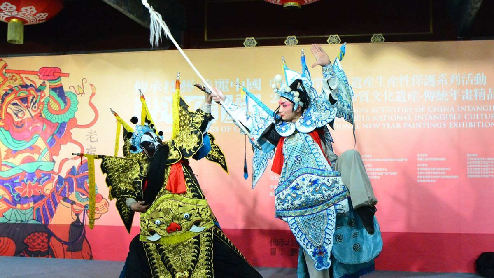

豫剧的历史源头可追溯至明朝中后期，但其真正形成并走向成熟则是在清朝中后期。关于豫剧的起源，"本土融合说"得到广泛认可，即豫剧以河南当地的民歌、小调、说唱艺术为基础，广泛吸收秦腔、北曲弦索腔、蒲州梆子等外来声腔的艺术精华，经民间艺人的不断打磨与改良，逐渐形成了独具特色的艺术形态。明末清初，梆子戏在中原地区开始流行，乾隆年间迎来发展契机，河南梆子的流行范围从开封逐步扩展至整个河南省中心地域，成为百姓日常文化娱乐的重要形式。
随着演出需求的增长，"堂戏"应运而生，乡绅大户邀请戏班入户演出，促使豫剧在表演技巧、舞台道具、伴奏乐器等方面不断完善。开封作为豫剧早期发展的核心区域，孕育了众多知名戏班。辛亥革命后，豫剧开始进入城市发展，豫剧茶社逐渐兴起。新中国成立后，豫剧迎来了蓬勃发展的黄金时期，涌现出常香玉、马金凤、陈素真等一批杰出艺术家，创作了大量优秀剧目，使豫剧艺术达到了新的高峰。